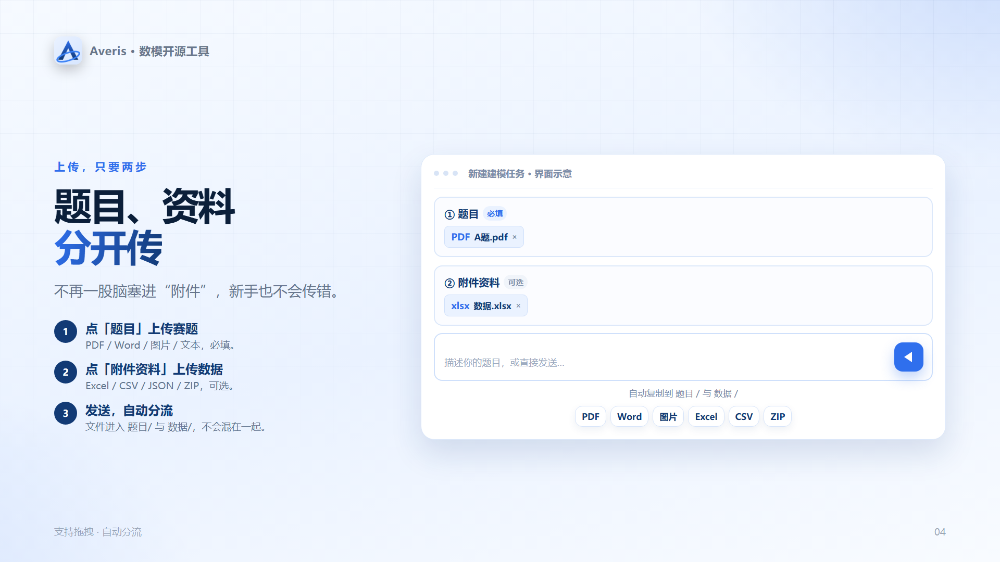

Averis 把读题、建模、求解、写作、导出串成一条工作流：内置 Python 求解环境与 LaTeX 排版，论文 PDF / Word 直出，图表与支撑材料自动整理。
在线版为演示模式：体验完整界面与流程，不接模型、不产生真实文件；真实求解请使用桌面版。

每个阶段的产出自动归档：题目、数据、求解代码、图表、论文与支撑材料。
解析赛题与数据
识别待求解问题
规划模型路线
方法可解释
内置 Python 引擎
逐问计算校验
赛事模板撰写
数值回链正文
PDF / Word 直出
支撑材料整理
赛题 PDF / Word 与数据 Excel / CSV 自动分流到「题目/」「数据/」，拖拽即可，新手也不会传错附件。
自带 Python 数值引擎与 TinyTeX（XeLaTeX），不装环境、不配路径，开箱即求解、即编译。
按赛事模板生成论文，PDF / Word 双格式导出；代码、300 DPI 图表、结果表自动归入支撑材料。